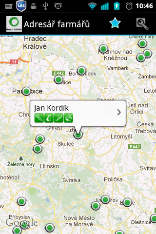
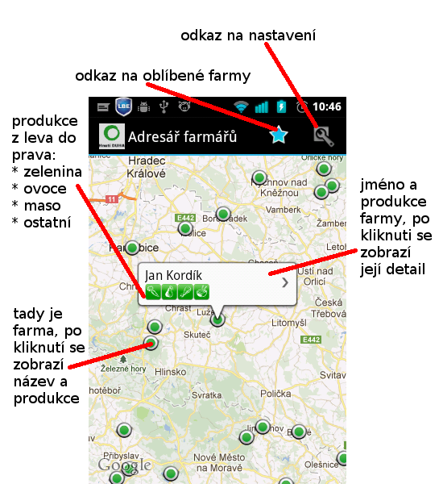
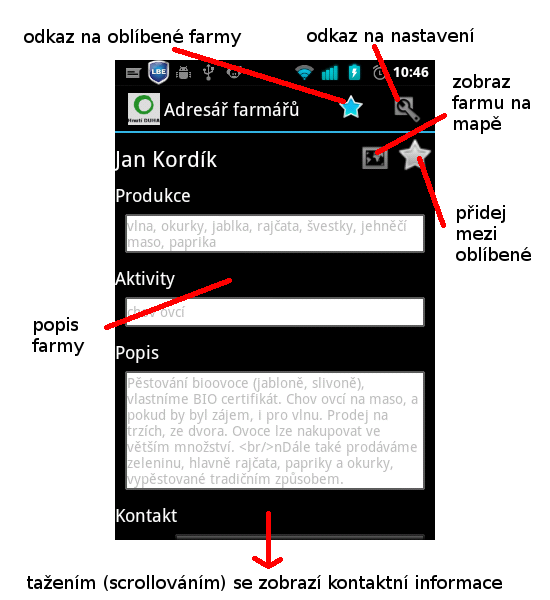
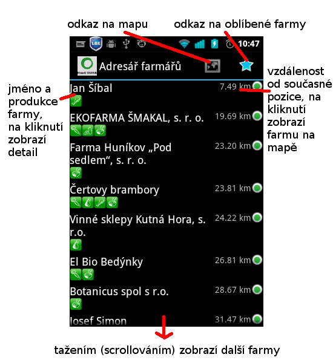
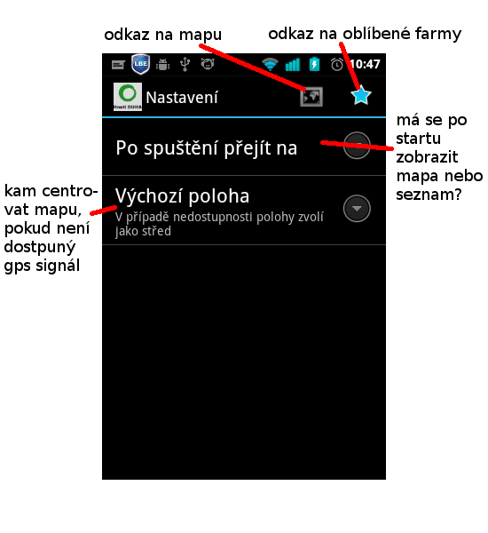

Najděte
si přímo v terénu nejbližšího farmáře a vychutnejte si
čerstvé ovoce či zeleninu z vašeho okolí.
Adresář farmářů, kteří prodávají přímo ze dvora nebo dodávají bio bedýnky obsahuje přes pět set kontaktů na ekologické farmáře. Ke každému hospodářství adresář uvádí podrobný sortiment, kontakt a informace, co a kam dodávají.
Aplikaci ve spolupráci s Hnutím DUHA vytváří Jiří Zouhar na základě částí vytvořených v rámci celosvětové akce Random Hacks of Kindness skupinou Jiří Zouhar, Jiří Prokop a Tomáš Hanáček. Tento program je svobodný software: lze ho distribuovat či modifikovat pod podmínkami GNU General Public Licence verze 3 Nakládání s obsahem aplikace, která je chráněna autorským právevm se řídí zákonem č. 121/2000 Sb., autorský zákon v účinném znění. Převzetí obsahu je možné pouze se souhlasem vydavatele dle §34 (1)c).
Navigace v aplikaci
Aplikace má šest obrazovek (Mapa, Seznam, Detail farmy, Záložky, nastavení a O aplikaci). Všechny až na Detail farmy jsou přístupné z menu a to buď přímo přes ikonu v liště, nebo zbylé ve vyjížděcím menu. Detail farmy se zobrazí pri poklepání na ni v seznamu nebo na mapě.
Mapa
Hlavní obrazovkou aplikace, sloužící k nalezení nejbližší farmy je mapa. Jednotlivé farmy jsou zobrazeny bílo-zelenými kolečky, po kliknutí se zobrazí bublina s produkcí farmy, kliknutím na bublinu se zobrazí detaily farmy. Bublina sama zmizí při kliknutí jinam v mapě.
Pohyb v mapě je klasickými gesty (tažení, pinch), případně za použití tlačítek.

Detail farmy
Zobrazuje popis farmy, její produkci, činnosti, které farma nabízí a kontakt na farmu. Kontakty jsou aktivní, kliknutím na ně lze vyvolat kontextovou akci (např. Zavolat na tel. Číslo, poslat e-mail...).
Kliknutím na ikonu mapy v záhlaví farmy je možné zobrazit farmu na mapě, hvězdička slouží k přidání (odebrání) farmy mezi oblíbené.

Seznam
Aplikace je koncipovaná převážně na vyhledání farmy přes mapu. V případě, že zrovna nemáte možnost se k internetu připojit, můžete místo mapy použít seznam.
Farmy v seznamu jsou setřízeny podle vzdálenosti od současné polohy. V levé části je zobrazeno jméno farmy a její produkce. Po kliknutí na název se zobrazí detail farmy. V pravé části je pak u každé farmy vzdálenost a ikona mapového bodu, jehož zvolením zobrazíme danou farmu na mapě.

Záložky
Pokud navštěvujete nějakou farmu častěji, máte možnost si tuto přidat mezi oblíbené farmy kliknutím na hvězdičku v detailech farmy. Tyto oblíbené farmy jsou pak dostupné ve zvláštním seznamu přístupném přes hvězdičku v záhlaví apliakce. Zda farmu máte mezi oblíbenými či ne poznáte jednoduše podle toho, jestli je hvězdička vybarvená (odebrání se provádí stejně jako přidání, hvězdička se změní na nevybarvenou).
p.s. Seznam oblíbených farem vypadá stejně jako seznam farem všech, jen je jich tam většinou méně :)
Nastavení

Jak spustím navigaci k farmě?
Toto aplikace bohužel zatím neumí, snad v příští verzi :)
V databázi mi chybí moje oblíbená farma
Dohodněte se s farmářem a pošlete nám na adresar@trilobajt.cz popis, rádi farmu přidáme. Zajímá nás zejména popis, produkce, činnosti, kontakt a gps souřadnice.
V aplikaci mi chybí funkce AB
koukněte jestli tato funkce už není naplánovaná, případně hlasujte
Aplikace ukazuje nesprávnou pozici.
V případě, že se nepodaří získat data z gps, aplikace zvolí za střed předvolený kraj. Zkontrolujte, že gps je zapnutá a funkční a aplikaci restartujte.
Aplikace padá (nebo se chová divně)
Chyby v aplikaci opravujem co nejrychleji. Je však možné, že zrovna o této nevíme. Podívejte se prosím na seznam známých chyb. Pokud zde vaše chyba není, prosím napište nám na adresar@trilobajt.cz
Nezobrazuje se mi mapa
Mapové podklady se načítají online ze serverů Google, ujistěte se, že máte funkční připojení k internetu.
Mapa se pokaždé načítá znovu
Toto bohužel vyplívá z licenčních podmínek Google Maps, také se nám to nelíbí a pravděpodobně proto časem přejdeme na mapy jiné.
Obecně řečeno, lidi :) Aplikaci vyvíjím(e) jako nadšenci ve volném čase, a toho se nedostává. Uvítáme proto jakoukoliv pomoc, zejména
programátory, znalost prostředí Android není nutná
grafiky, lidi přes UI
testery